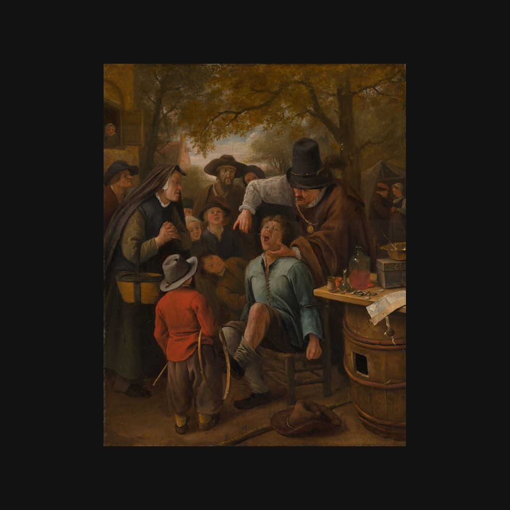

拔牙者
楊·斯汀 · 1651年
The Tooth-Puller
解說節錄
一個男孩張著嘴，握緊拳頭，襪子都滑落了下來；身後的拔牙者，用鉗子夾著一顆牙。圍觀的人，大多在看熱鬧；左邊一位婦人，臉上露出同情，她是不是男孩的母親，莫瑞泰斯皇家美術館也只是提出了疑問。
這是《拔牙者》，楊．斯汀一六五一年所作，只有三十多公分高，年份就寫在一張帶蠟印的卷狀證書上。斯汀以充滿幽默的荷蘭風俗畫著稱，他早期常畫受江湖醫生矇騙的鄉民。一六五一年，也是他目前已知有標明年份的作品中，最早的年份。
— 國語講稿 · Artvery
完整解說約 2 分鐘，在 Artvery App 裡收聽。國語、粵語、內地普通話三種語音，館內對準作品即可辨識播放。
即將上架 App Store
App 即將上架，敬請期待。上架後免費下載，每座博物館單獨購買，一次購買永久使用。
作品資訊
- 作者
- 楊·斯汀
- 年代
- 1651年
- 尺寸
- 32.5 × 26 公分
- 位置
- 莫瑞泰斯皇家美術館 · 荷蘭風俗畫、風景與靜物
- 館藏編號
- 165
莫瑞泰斯皇家美術館參觀攻略：必看名作與路線 · 莫瑞泰斯皇家美術館中文語音導覽